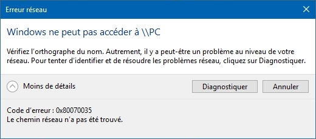
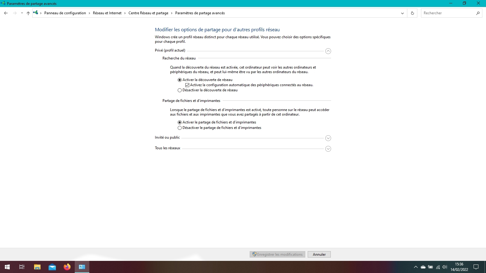

Vous essayez d'accéder aux fichiers d'un ordinateur sans fil et vous obtenez cet erreur ? Nous sommes là pour vous aider.
Cette erreur ressemble à l'erreur 0x80004005, si le nom de l'adresse est correct, essayez de voir sur la page de l'erreur 0x80004005 comment résoudre ce problème.
Essayez notamment de voir si dans les paramètres de centre de réseau et de partage, vous avez cette configuration (explication dans le lien précédent).
